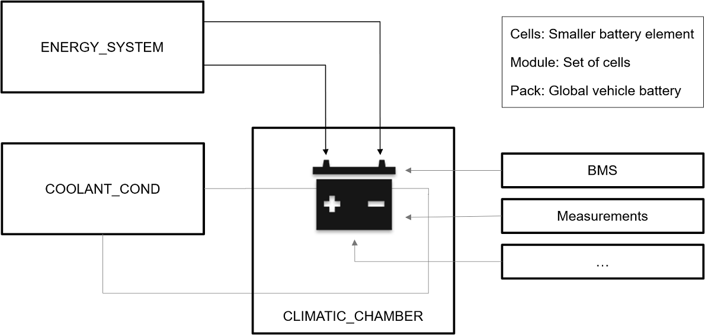
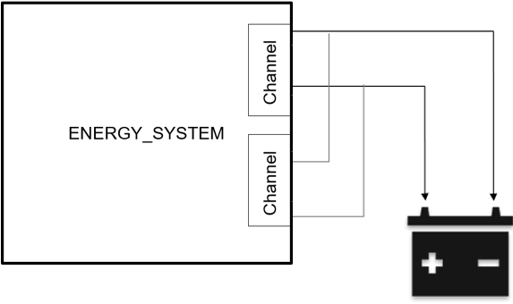
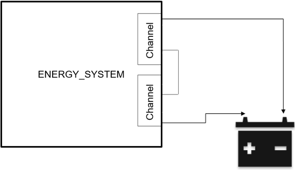
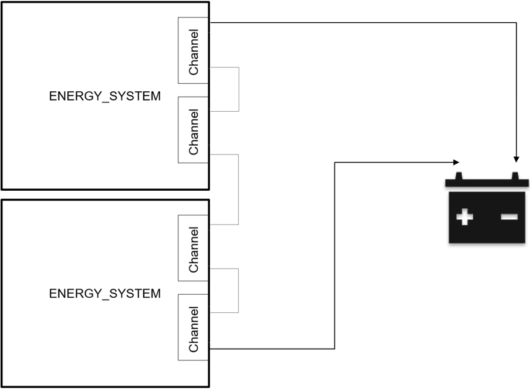
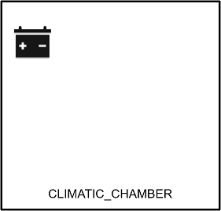
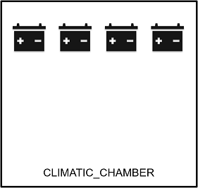
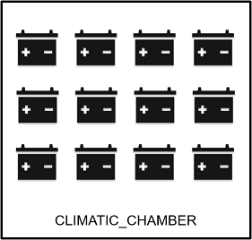

General presentation
Contenu
General presentation¶
Introduction¶
SCALE Battery has been developed to address all type of battery;
Cell
Module
Pack
To meet the market demand, we are using the MORPHEE® multi-instance concept. This allows to start on the the same computer;
Up to 32 cell tests in parallel
Up to 16 Module tests in parallel
Up to 8 Packs tests in parallel
Battery Testing principle¶
Equipements and measure¶
To test a battery we need to have:
An Energy System >> Allow to charge and discharge the battery. Generally it also manage the re-injection on the network.
A climatic chamber - optional >> Allow to simulate environmental conditions
A coolant conditionning system - optional >> use to cooldown the battery in same condition as in the vehicle.
A BMS (Battery Mangement System) - optional >> Battery control unit handling the different cells/modules/pack and different modes (charge/sleep/Drive)
Additionnal acquisition - optional >> Allow to add voltage, current and temperature measurement.

Note
Except Energy System, all others equipement can be ‘Optional’, depending on each application.
Energy system channel concept¶
Energy System have one or several channel allowing to address one or several battery:
If there is a need for more current, channels can we wired in parallel
If there is a need for more voltage, channels can be wired in serial
Parallel connexion |
Serial connexion |
|---|---|
 |
 |
Regarding equipement capability, it is also possible to combine Energy system cascading and channel parallelisation or serialisation.
Equipement and channel cascading |
|---|
 |
Modularity¶
Generally, in one climatic chamber there will be several battery in test. Climatic condition are identical but tests can be different!
1 battery |
4 batteries |
12 batteries |
|---|---|---|
 |
 |
 |
Important
The quantity of test is directly linked to the quantity of Energy System channels. For example, if globaly a system has 8 channels, we can:
Start 8 independant test using 1 channel each
Start 4 independant test using 2 channel each (in // or serial)
Start 2 independant test using 4 channel each (in // or serial)
Possibility is given, in one side from the hardware, and in the other side from the software configuration.
Software architecture¶
Software architecture is based in one hand, on a master application managing most of the equipments (Energy, cooling, acquisition, climatic…), and on another hand several procedure executing the test(call instances). Communication between main application and procedure is developped the in MORPHEE® multi-instance chapter.

Objective is to keep all instances as identical as possible. Only some interfaces can change;
BMS
Specif devices.
A specific configuration (hardware connexion) can also be done for every instance..
Instances capability¶
We limit the quantities of instances to 1 master + 32 instances. But more generally, the quantities will be limited by the configuration you will select:
Ref |
Description |
|---|---|
SA-M64-MULTI-04 |
Possibility to start 1 Master Instance + 4 test instances |
SA-M64-MULTI-08 |
Possibility to start 1 Master Instance + 8 test instances |
SA-M64-MULTI-16 |
Possibility to start 1 Master Instance + 16 test instances |
SA-M64-MULTI-24 |
Possibility to start 1 Master Instance + 24 test instances |
SA-M64-MULTI-32 |
Possibility to start 1 Master Instance + 32 test instances |
Instances limitation¶
Actual limitations are as follow:
Ref |
Master |
Instances |
|---|---|---|
Up to 1 + 8 instances |
1 kHz |
1 kHz |
Up to 1 + 16 instances |
500 Hz |
500 Hz |
Up to 1 + 32 instances |
100 Hz |
100 Hz |
Note
This limitations has been achieved with FEV 8 cores computer.